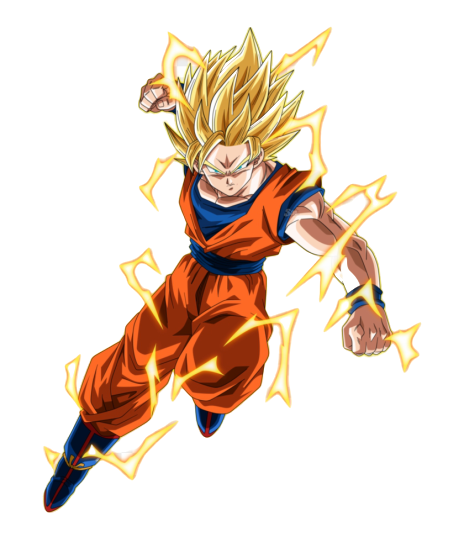
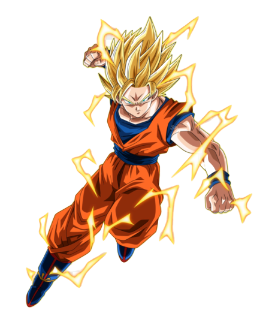

Super Saiyan
Super Saiyan
What is a Super Saiyan?
A Super Saiyan is an advanced transformation assumed by members and
hybrids of the Saiyan race with sufficient amounts
of S-Cells in the Dragon Ball franchise.
Earthlings (of Saiyan heritage) in Dragon Ball Online can also assume the transformation by wishing to have their
dormant Saiyan powers unlocked.
Super Saiyan form first premiered in April 1991, within chapter 317 of the Dragon Ball manga, entitled "Life or
Death".
It also made its anime debut in 1991, first appearing in Dragon Ball Z episode 95, "Transformed at Last".
Goku achieves the form out of anger over the murder of his best friend Krillin, and in a what-if scenario Bardock
achieves the form out of anger after Chilled attacked a Plant child called Berry, while Vegeta achieves the form
through sheer frustration at his original inability to achieve it, especially when Goku already had.
While training in the Hyperbolic Time Chamber, Goku informs Gohan that becoming a Super Saiyan is powered by rage and
told him to imagine Cell and then Frieza (after Gohan stated he had never seen Cell) killing all his friends in order
for him to transform into a Super Saiyan. As the Saiyans train during Dragon Ball Z, they discover uncharted levels
beyond the first Super Saiyan level.
The power increases of subsequent Super Saiyan forms are so high that by the Buu Saga, the original transformation has
been literally reduced to a "child's plaything" (as stated by Vegeta, as both Goten and Trunks can transform and
harness the power adeptly at such a young age).
 
